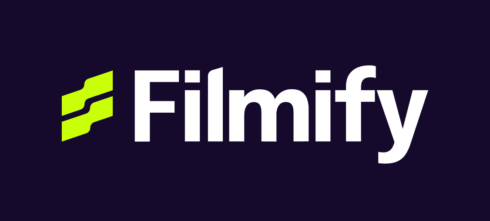
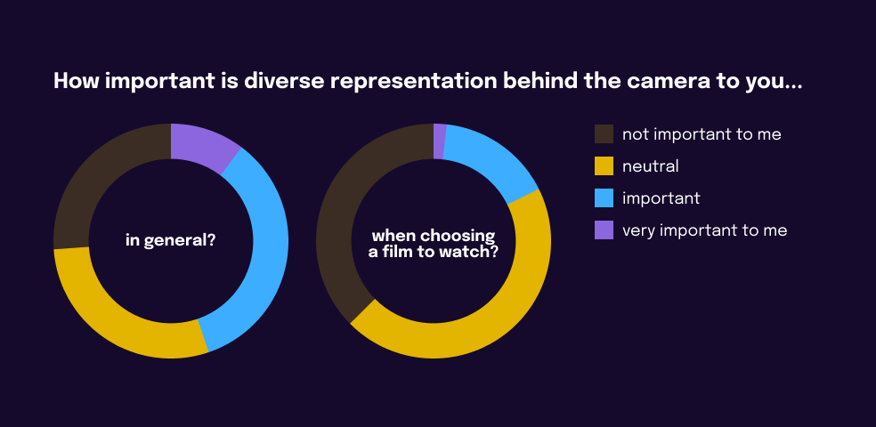
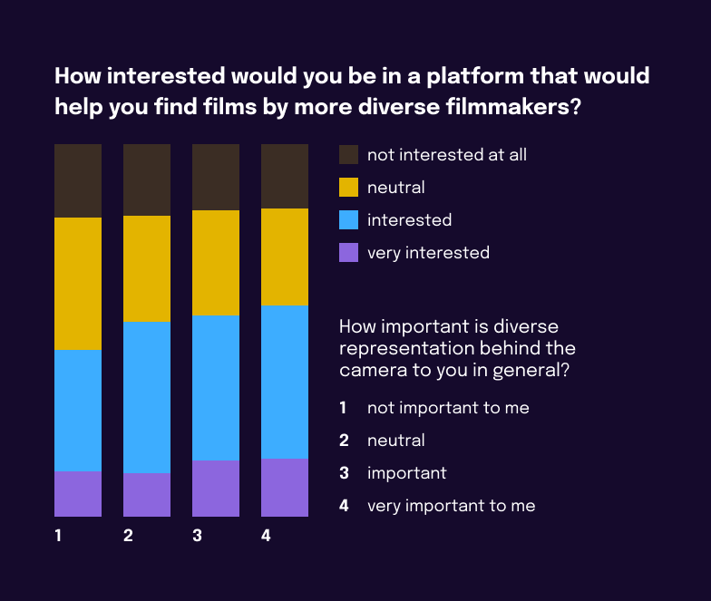
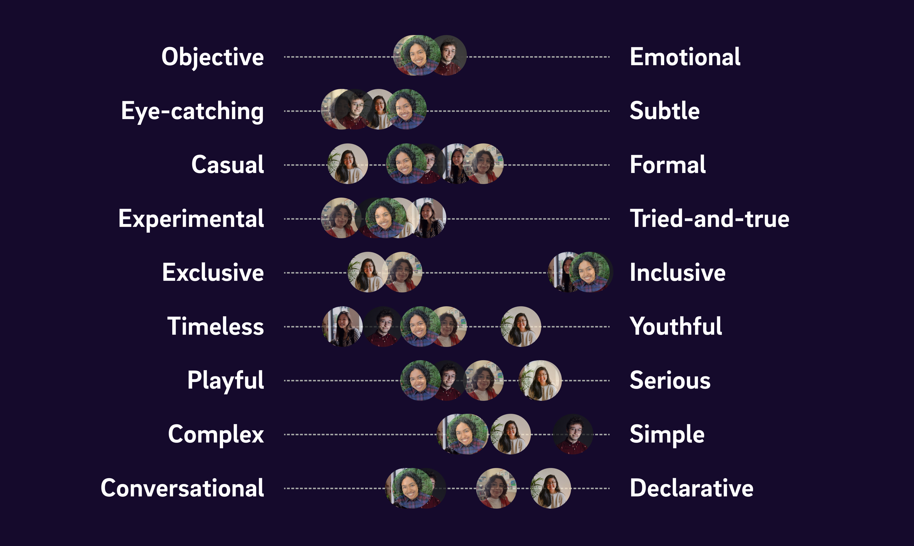

Filmify
UX/UI, branding, marketing, project management
For my yearlong Interaction Design capstone course at Northeastern University, I am currently working with a team of 4 others to design and develop Filmify, an online platform that promotes diversity in the film industry by increasing viewership of films by diverse, underrepresented filmmakers.
In the Fall 2020 semester, I led user research, UX strategy, and marketing. I also worked with the other designers on UI and branding.
Background
I watch many short films and feature films. I especially enjoy the works of Christopher Nolan and Alfred Hitchcock, and I also like to support independent filmmakers, from people I know personally to up-and-coming filmmakers. However, it wasn't until chatting with my teammates that I began to consider the diversity of filmmakers, especially as an issue within Hollywood. I realized that most of the feature films I've watched were directed by white, cis men.
User research
After Srilekha conducted industry research and we learned that most films that we are exposed to are in fact directed by white, cis men, I led user research to understand how this affects people who watch films and determine our target users.
Through a survey of 400 responses from friends, family, other students, and multiple film communities and groups over social media, I discovered that people may find diverse representation behind the camera important in general, but not so much when it comes to choosing a film to watch.
{kind=link}
However, I also discovered that how important one finds diverse representation behind the camera is positively correlated to their interest in a platform that would help them find films by diverse filmmakers to watch.
{kind=link}
Ultimately, I confirmed a user need and interest, as users do not know where to find information about the off-screen diversity of films yet find the issue important and/or of interest.
For more detailed insights, Natalie and I conducted 4 semi-structured, remote, moderated interviews with people who watch film.
I then worked with Celine and Srilekha to create personas from the user interview insights. We determined that our target users were film enthusiasts, whose habits were beyond casual film watching for entertainment.
UX strategy and design
I created a user flow diagram that evolved drastically throughout the design and development process as we better understood our own project. This diagram will guide our work moving forward.
{kind=link}
There are two main types of users: those who connected their Letterboxd account and those who have not. An unconnected user starts at the homescreen, and can go through a narrative educating them on diversity in the film industry. From there, they can connect their Letterboxd and/or provide some other input to receive a diversity analysis of the films they've watched and personalized film recommendations for films directed by diverse filmmakers.
Natalie, Celine, and I designed and iterated on wireframes for the homepage, film detail page, browse/search films page, and about page. We are currently UX testing these designs.
Branding
Natalie, Celine, and I created moodboards, discussed personality levers, and explored color palettes and typefaces. At the end of the semester, we determined visual elements to move forward with. With Josh, we also explored several logo designs.
{kind=link}
Personality levers
{kind=link}
Logo exploration
Marketing
I determined our marketing deliverables and timeline, and began forming the basis of our marketing strategy. I outlined marketing objectives that will be met through a combined strategy of owned, earned, and paid media in the weeks surrounding our launch. Our long-term marketing strategy will primarily focus on earned media as we want Filmify to live on by itself without active team engagement.
Natalie and I investigated how similar products (found through competitor research) conduct their marketing and outreach through competitor analysis. This includes their site analytics and social media engagement. These findings will help determine our final strategy as we better understand what tactics work best in reaching and driving engagement from our intended audience.
Next steps
We are continuing this project in the Spring 2021 semester.
- Finalize branding and create any marketing materials
- Solidify our current wireframes and design remaining screens including the data analysis section
- Create high-fidelity prototypes to test with representative users
- Complete development of our film diversity algorithm
- Build out Filmify as a progressive web application
- Complete and execute our marketing strategy to promote Filmify in the weeks surrounding launch
- Launch!
Team
Natalie Duerr — Designer
Srilekha Nuli — Developer
Josh Pensky — Developer
Karisa Tzeng — Designer
Celine Yan — Designer